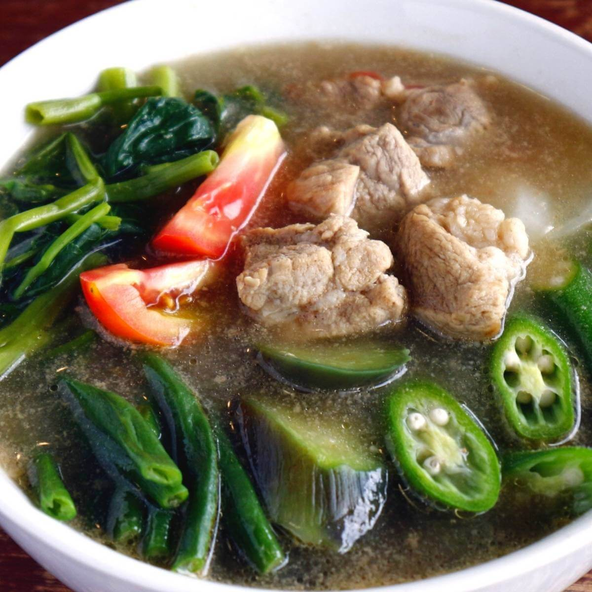
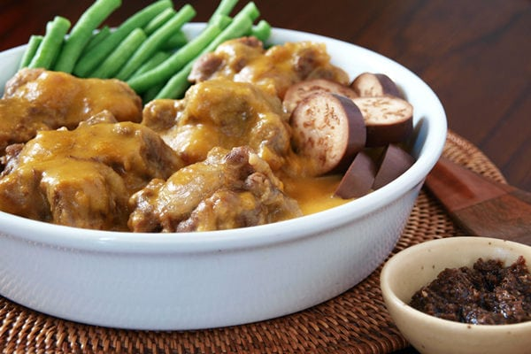

Restaurant Guide
Produced by: Local Magazine

Adobo
₱100
Adobo is a savory dish...

Sinigang
₱150
Sinigang is a tangy soup...

Kare-Kare
₱180
Kare-kare is a rich stew...

Bulalo
₱200
Bulalo is a comforting soup...